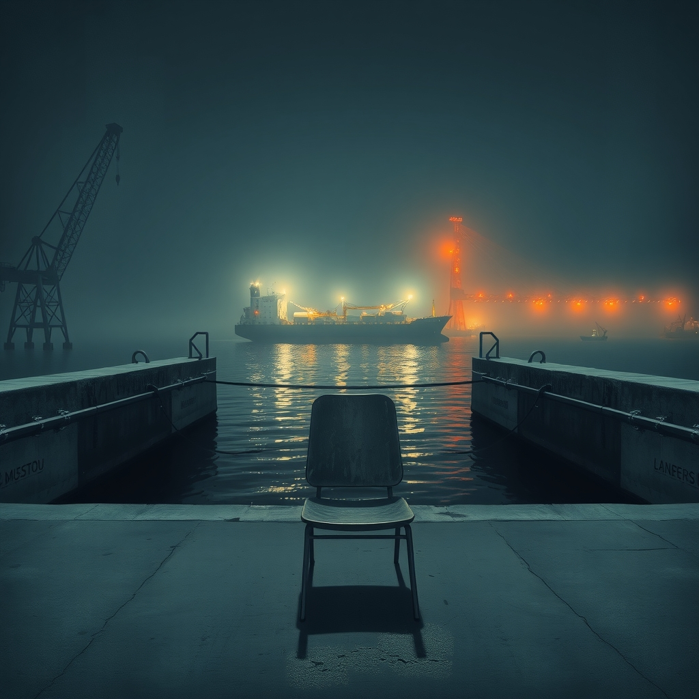
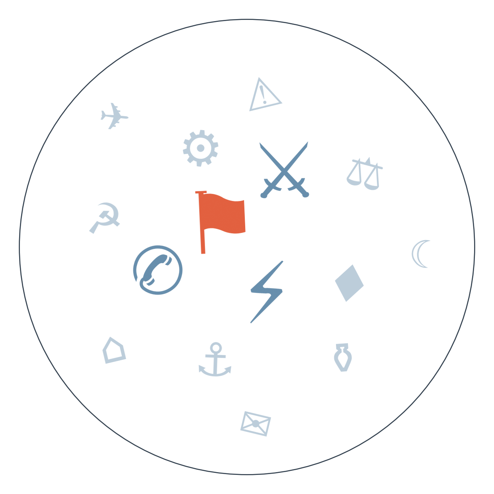

Ранковий бріф · огляд світової преси

Отже, Швеція проголосувала — і вийшла нічия, яка все ж має переможця. За частковим підрахунком (близько 92% голосів, дані виборчої комісії SVT, які цитують BBC, Le Monde та France 24) опозиційний ліво-центристський блок Магдалени Андерссон випереджає уряд Крістерссона рівно на одне місце в 349-місному парламенті, а Шведські демократи вперше в історії партії втрачають підтримку. Це означає можливе повернення соціал-демократів до влади вперше за чотири роки і черговий, після Польщі й інших країн, сигнал, що європейська ультраправа хвиля не рухається лінійно вгору.
Тим часом Трамп публічно закликав Зеленського припинити удари по нафтопереробних заводах Росії, пояснивши це рекордними цінами на дизель у світі (за даними Financial Times, яка цитує заяву самого президента США). Це перше настільки пряме втручання Вашингтона у воєнну тактику Києва з посиланням на економічний, а не безпековий аргумент — і воно ставить під сумнів, наскільки послідовною лишається підтримка США, коли ціна нафти зачіпає американського виборця напередодні проміжних виборів.
Паралельно зустріч Ірану з країнами Затоки в Омані щодо Ормузької протоки перенесена — офіційно "в інтересах консенсусу" (Оман, за Al Jazeera та Al Arabiya). Ескалація навколо двох найважливіших нафтових вузлів планети — Ормузу і Баб-ель-Мандебу — триває вже два тижні й лишається основною причиною, чому дизель і Brent продовжують зростати.

Сюжет 1: дрон ударив по потягу Київ–Варшава за кілька хвилин після того, як тим самим маршрутом проїхали Борис Джонсон, колишній директор ЦРУ Девід Петреус та інші європейські безпекові радники.
Замовчують: жодне джерело не наводить технічних доказів, що дрон навів саме на конкретний потяг, а не на інфраструктуру поруч; версія про "мисливство на дипломатів" лишається версією.
Чому розходяться: Києву і Лондону вигідно показати підступність і небезпеку Росії напередодні жовтневих переговорних вікон — це аргумент за зброю і санкції; Кремлю вигідно применшити прицільність, щоб уникнути звинувачення в атаці на іноземних високопосадовців; ділова преса дивиться на подію крізь призму цін на нафту і геополітичного ризику, а не дипломатичного скандалу, бо це її головна тема тижня.
Сюжет 2: заклик лідерів ШІ-індустрії сповільнити розробку.
Замовчують: жодне джерело не називає конкретних "тривожних інцидентів", які нібито спричинили цей раптовий консенсус — усі говорять про них абстрактно.
Чому розходяться: американська якісна преса трактує це як науково-етичну дискусію; Білий дім має прямий інтерес не гальмувати технологічну гонку з Китаєм і тому знецінює застереження; німецька ліва преса традиційно шукає комерційний розрахунок за фасадом турботи про безпеку; швейцарська ділова преса, менш емоційно залучена в американську політичну боротьбу, читає одностайність індустрії буквально — як ознаку, що ризик справді сприймають серйозно.
01.09 Раунд переговорів Ізраїль-Ліван у Римі перенесено з вересня на жовтень → початок вересня Ізраїль заявляє про знищення підземної інфраструктури "Хезболли" під хребтом Алі-ат-Тахер → 14.09 американський чиновник підтверджує Al Arabiya, що зустріч у Римі відбудеться саме в жовтні → веде до: Ізраїль продовжує нарощувати воєнну перевагу, свідомо не поспішаючи закріпити статус-кво дипломатично, поки має превагу на полі.
13.09 дрони з території Іраку виводять з ладу саудівський нафтопровід Схід-Захід, за неофіційними даними Багдад вживає кадрових заходів на прикордонній ділянці → 14.09 уряд Пакистану в телефонній розмові з Мохаммедом бін Салманом засуджує атаки хуситів (Al Arabiya) → веде до: наростання тиску на формальну активацію Мекканського альянсу як відповіді вже не на одну, а на дві паралельні загрози — з Ємену і з Іраку.
Кевін Уорш раніше натякав на протилежний підхід до ставок → 10-11.09 нафта Brent зростає на тлі ескалації Ормузу і Баб-ель-Мандебу → 14-15.09 очікується рішення FOMC одночасно під тиском дорогої нафти і публічних вимог Трампа ставку знизити → веде до: рішення ФРС стане перевіркою незалежності центробанку від політичного тиску саме в момент енергетичного шоку.
Brent тримається на 108-109 доларах напередодні рішення FOMC, очікуваного 15-16 вересня.
Дизель у світі встановлює нові цінові рекорди — комбінований ефект війни Ізраїлю з Іраном і українських ударів по НПЗ Росії, на що вже публічно відреагував Трамп.
За неофіційними даними, США скликали енергетичні переговори G20 у Техасі через порушення світового ринку палива.
В Індії ціни на бензин і дизель у Делі, Мумбаї й Бенгалуру зростають після зупинки саудівського нафтопроводу, а уряд диверсифікує постачання нафти, щоб пом'якшити наслідки ірансько-саудівської кризи.
Поки якісна преса Європи зважує кожне крісло шведського парламенту й геополітику Ормузу, Bild запитує головне: чи дизель вдарить по три євро? Глобальна енергокриза тут — це передусім загроза гаманцю читача.
Fakt тим часом тримає читачів на короткому повідку драми про зниклу жінку в кількох щоденних епізодах — атака дрона за кілька кілометрів від польського кордону промайнула одним заголовком і зникла.
Times Now у Індії вміщує тривогу через саудійський нафтопровід між таймінгом Ганеш Чатуртхі і фліртом Зверева з дівчиною суперника — глобальна криза і локальне свято йдуть поруч, наче рівнозначні.
Вимога Трампа зупинити удари по нафтопереробних заводах РФ (див. ГОЛОВНЕ) для Києва означає перший випадок, коли головний військовий партнер тисне на воєнну тактику економічним, а не безпековим аргументом — і ставить питання, чи змінить Україна тактику під цим тиском.
Дрон РФ вразив потяг Київ–Варшава невдовзі після проїзду потяга з іноземними високопосадовцями (деталі — у РОЗКОЛІ ОПТИКИ) — інцидент підвищує ризикованість статусу України як транзитного коридору для західних делегацій напередодні жовтневих перемовин.
Зеленський увів санкції РНБО проти колишньої речниці Юлії Мендель за звинувачення у поширенні російської пропаганди — сигнал про продовження чистки інформаційного простору всередині країни.
Протести в Сирії через різке підвищення цін на пальне висвітлює по суті лише Al Jazeera — і це має вагу: перший масовий вияв невдоволення новою владою після падіння Асада тоне в тіні гучнішої війни Ізраїль-Іран, а незручна тема економічного провалу перехідного уряду не вписується в наратив Затоки про успішну відбудову Сирії.
Заколот у Нігері, який оголює зростання залежності країни від Росії, подає лише Al Jazeera — західна преса, зосереджена на Україні, Ірані й шведських виборах, просто не підхопила сюжет, хоча він означає подальше витіснення Франції з колишньої зони впливу в Сахелі.
Рейди турецької поліції на ЛГБТК-заклади фіксує лише англомовна BBC — ані опозиційний Cumhuriyet, ані пропрезидентський Daily Sabah у сьогоднішній вибірці цю історію не згадують, що може означати як витіснення теми гострішими новинами, так і небажання внутрішньої преси, незалежно від табору, торкатися цієї теми напередодні можливих переговорів Туреччини з ЄС.
Друга за тиждень масова поромна катастрофа в Індо-Тихоокеанському регіоні (після Вануату) може підштовхнути регіональну перевірку безпеки поромного сполучення. На основі: 8 джерел, включно з BBC, DW, Euronews.
Дзвінок MBS-Шехбаз Шаріф із засудженням атак хуситів може бути прелюдією до прискореної активації Мекканського альянсу ще до заявленого горизонту. На основі: 1 джерело, Al Arabiya.
Новий уряд Курті в Косові зіткнеться зі швидкою перевіркою стабільності на тлі передвиборчої напруги в сусідній Сербії. На основі: 1 джерело, Aktuality.
Наші:
Соціал-демократи Андерссон сформують уряд у Швеції, навіть без формальної коаліції, до 28.09.2026
Україна продовжить удари по нафтопереробних заводах Росії попри публічну вимогу Трампа, до 28.09.2026
Саудівська Аравія відновить повну прокачку нафтопроводу Схід-Захід до 28.09.2026
Кажуть інші:
Кремль, Дмитро Пєсков (за Al Arabiya) — не виключає повернення до тристоронніх перемовин Росія-США-Україна вже в жовтні; горизонт — жовтень 2026.
Базова лінія у прогнозах. Відсоток «базово» — це ймовірність події за інерцією, якщо ніхто нічого не робитиме й нічого не зміниться. Друге число — наша впевненість. Прогноз має сенс лише тоді, коли ці числа розходяться: збіг означає, що ми просто описали поточний стан.
Відсотки в карті уваги. Частка країни в денному обсязі зібраних матеріалів. Не показник важливості події, а показник того, скільки місця країна зайняла в новинному потоці за добу. Різкий стрибок частки зазвичай означає, що в країні щось відбувається.
Стрічки, які не відповіли. Не відповіли (9): The Paper, Daily Nation, Australian Financial Review, Kathimerini, Corriere della Sera, Milenio, China Times, Hromadske, Liga.net